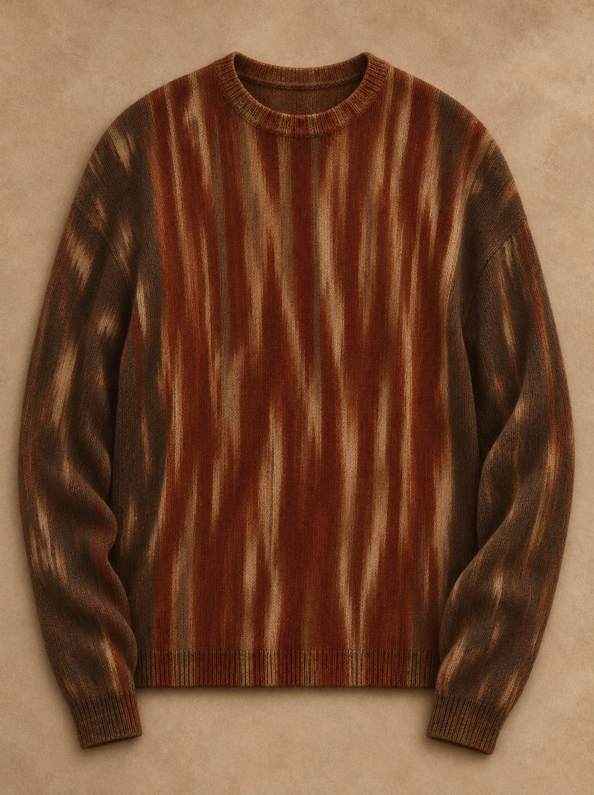
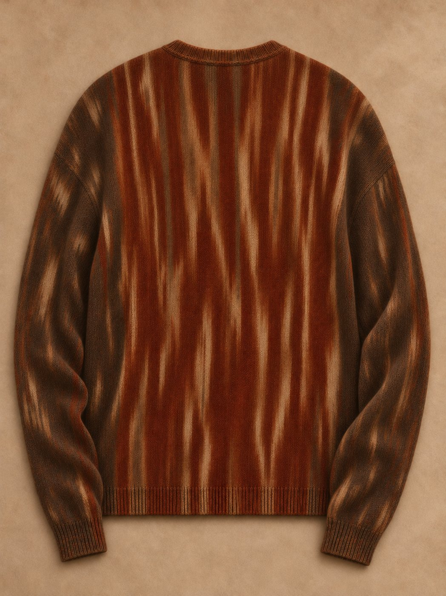
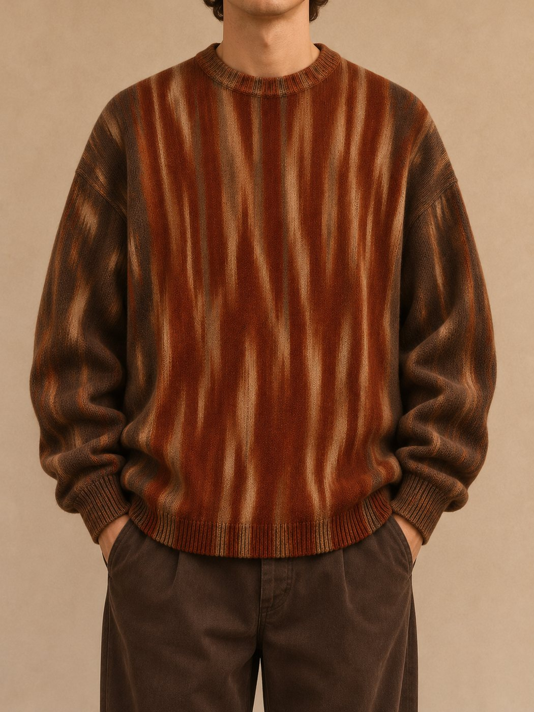
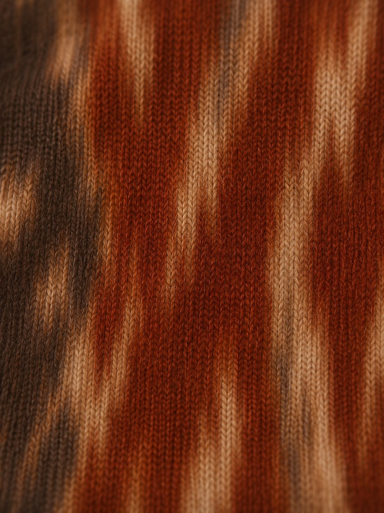
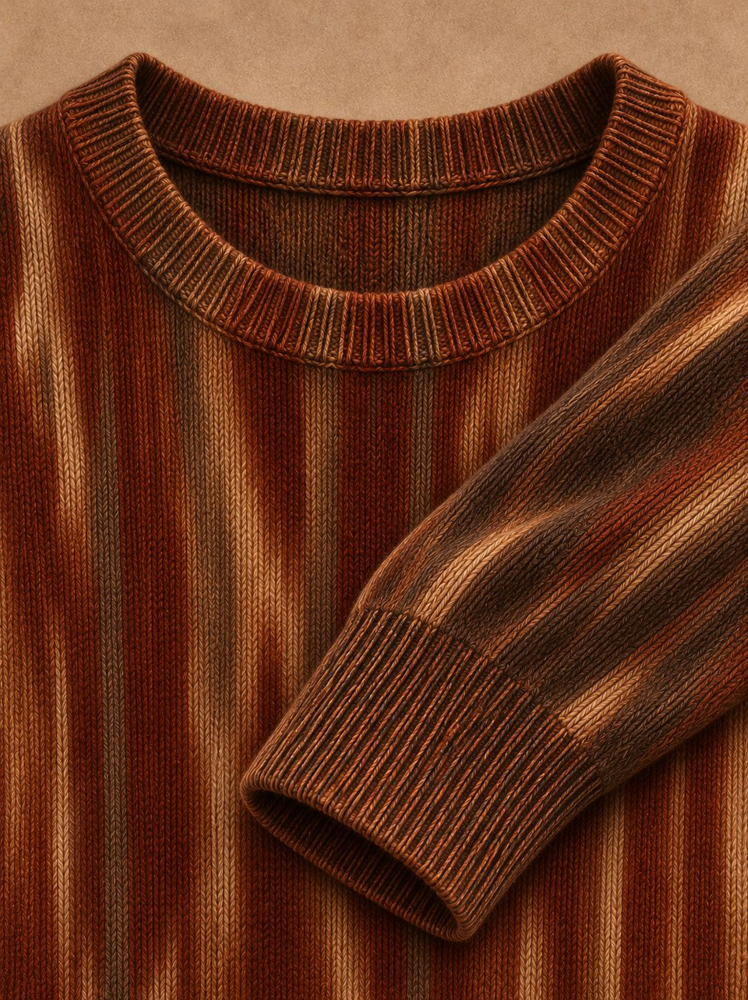
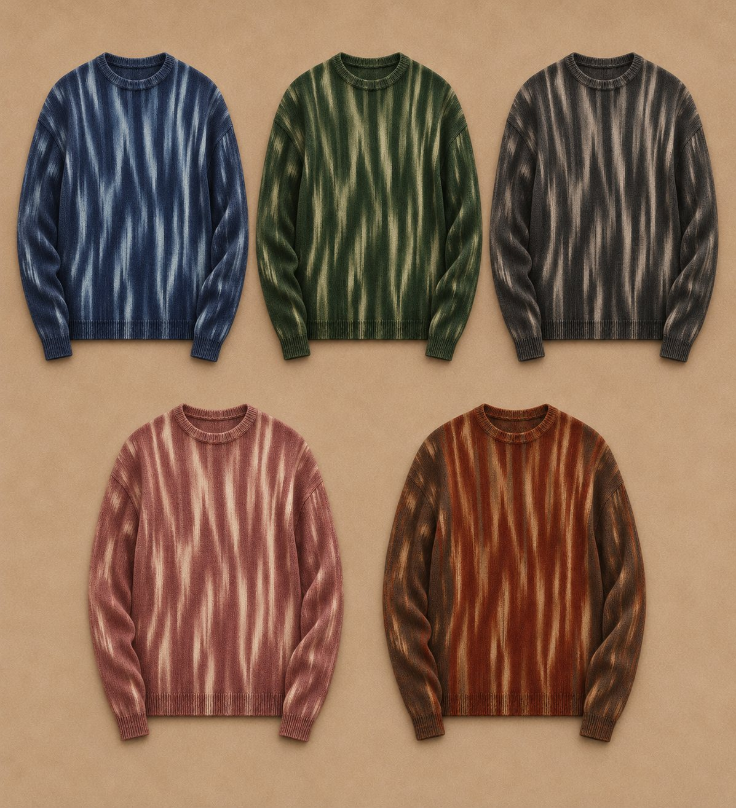

Design Brief
Sweater
Design brief, style and mood · 2026-11-28
A relaxed crew neck sweater in a soft, fine knit, with a blurred vertical ikat-like pattern in rust, brown and tan. Warm, calm and clean. The brief sets the look and mood through six views, from front and back to knit and rib detail and colorways; fiber, gauge and construction are left to product development.


(01) Hero: front flat lay, clean and new.

(02) Back: flat lay, same pattern and rib.

(03) On body: relaxed oversized fit, front view.

(04) Knit detail: close view of the stitch and the soft feathered pattern edge.

(05) Rib detail: crew neck and cuff, where the pattern meets the rib.

(06) Colorways: the original and four alternates.Overview
A relaxed crew neck sweater in a fine, soft knit, with a blurred, vertical ikat-like pattern in rust, brown and tan. The pattern runs down the body and sleeves; ribbed neck, cuffs and hem frame it. Clean and new, with a drop shoulder and an oversized fit. (01, 03)
Mood
Warm, earthy and calm. Hand-dyed cloth seen through a soft focus: the edges of each streak feather out instead of stopping. Lived-in comfort without any wear, made for autumn light. (03, 06)
Style direction
- Pattern
- long vertical streaks with feathered edges, like dyed warp threads; no hard outline.
- Silhouette
- simple and boxy, so the pattern does the work.
- Trim
- plain fine ribs at neck, cuffs and hem, in the colors of the body.
- Balance
- the body carries the brightest rust; the sleeves sit darker and calmer.
Color and finish
Read from the images, not measured or matched to a color standard.
| Area | Color | Finish |
|---|---|---|
| Body | Deep rust with tan streaks | Soft, slightly brushed knit, matte |
| Sleeves | Dark brown with olive-brown and tan streaks | Same knit, calmer pattern |
| Neck, cuffs, hem | Rust and brown, fine stripes | Fine rib, matte |
Material and detail
A fine-gauge knit with a smooth face and a soft hand, in a natural fiber look such as wool or a wool blend. The color shifts sit inside the yarn and the stitch, so the pattern looks dyed into the cloth, not printed on it. The rib at the neck and cuffs is narrow and firm. (04, 05)
Use and context
An everyday layer for cool days: over a shirt, under a coat, with plain trousers. It reads the same from the front and the back. (02, 03)
Garment views
Front and back flat views show the pattern as one continuous design across body and sleeves. The on-body view shows the drop shoulder, the length at the hip and the relaxed sleeve. Pattern placement is similar on both sides. (01, 02, 03)
Knit and trim detail
How the look could be built, for discussion; product development decides. Fine rib neckband, cuffs and hem; a smooth jersey-like body with color changes in the yarn or stitch; flat seams at the shoulder. The close views set the scale of the stitch and the width of the rib. Sizes and measurements are not set. (04, 05)
Colorways
The original rust, brown and tan, and four alternates that keep the soft vertical streak: indigo, forest green, charcoal and dusty rose. (06)
Open to product development
- Fiber, gauge and yarn; how the pattern is made (yarn dye, knit-in or print).
- Fit, size range, length and shoulder.
- Rib depth, neck width and finishing.
- Colorway range, trims and cost.
The brief fixes the look and mood; every detail above can change.
Credits and rights
AI-derived product looks made for this brief (image model), based on an ikat-style pattern idea; looks, not a construction. Sizes and fit are not set.